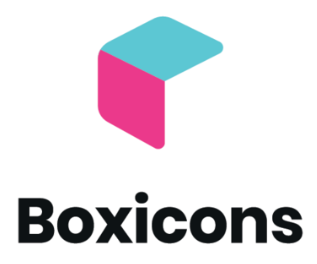

Contador de Seguidores
Número de Likes
Canción Actual
<div class="infoWidget">
<div class="infoWidget_glassBackGround"></div>
<div class="infoWidget_shapesContainer">
<div class="color-shape color-shape_right"></div>
<div class="color-shape color-shape_left"></div>
</div>
<i class="bx bxl-facebook-circle infoWidget_icon"></i>
<div class="infoWidget_text">facebook</div>
<div class="infoWidget_tooltip">10k+</div>
</div>
Para utilizar el widget, solo debes copiar el código de al lado y pegarlo en archivo HTML.
Para utilizar la variación responsive, agregar la clase infoWidget-large al elemento
infoWidget.
Para cambiar los iconos del widget, puedes utilizar los iconos de
Boxicons.
Solo debes cambiar la clase del elemento i por la clase del icono que quieras utilizar.
Incluir el código de la derecha como parte del head de tu archivo HTML.
<link rel="stylesheet" href="https://unpkg.com/boxicons@2.1.4/css/boxicons.min.css" >
<link rel="stylesheet" href="style.css" >
<link href="prism.css" rel="stylesheet" >
Utiliza Boxicons
Código CSS
:root {
/* Colors */
--icon-color: #f7f2f7;
--info-text-color: #f7f2f7;
/* Shapes Gradient Colors */
--vl-g1-first-color: #f76f8e;
--vl-g1-second-color: #d79b00;
--vr-g2-first-color: #0038ff;
--vr-g2-second-color: #c1ffb7;
/* Glass Panel */
--glass-background: rgba(203, 203, 203, 0.2);
--glass-border: 2px solid rgba(255, 255, 255, 0.1);
--glass-shadow: 0 0 10px rgba(0, 0, 0, 0.2);
/* Tooltip */
--tooltip-background: #ffffff;
--tooltip-border: 1px solid #d195e9;
--tooltip-color: #d195e9;
/* Toltip Large Variant */
--tooltip-l-background: transparent;
--tooltip-l-border: none;
--tooltip-l-color: #f7f2f7;
/* Body */
--first-color: #ffffff;
--first-color-light: #d195e9;
--body-color: #0c0c0c;
/* Font and typography */
--body-font: "Roboto", sans-serif;
--normal-font-size: 1rem;
--info-widget-font-size: 5.5rem;
}
/* infoWidget_icon and infoWidget_tooltip */
.infoWidgets,
.infoWidgetContainer,
.infoWidget {
display: flex;
}
/* Contenedor de los Widgets */
.infoWidgets {
height: 100vh;
justify-content: center;
align-items: center;
}
/* Widget */
.infoWidget {
position: relative;
justify-content: center;
align-items: center;
margin: 10px;
width: 100px;
height: 100px;
font-size: 100px;
/* overflow: hidden; */
cursor: pointer;
}
/* Background del Widget - Vidrio */
.infoWidget_glassBackGround {
position: absolute;
width: 100%;
height: 100%;
/* Efecto de Vidrio */
background: var(--glass-background);
-webkit-backdrop-filter: blur(20px);
backdrop-filter: blur(20px);
border: var(--glass-border);
border-radius: 20px;
box-shadow: var(--glass-shadow);
cursor: pointer;
}
/* Contenedor de las figuras de fondo */
.infoWidget_shapesContainer {
overflow: hidden;
position: absolute;
width: 100%;
height: 100%;
}
/* Icono del Widget */
.infoWidget_icon {
z-index: 0;
font-size: var(--info-widget-font-size);
color: var(--icon-color);
}
/* Texto del Widget */
.infoWidget_text {
visibility: hidden;
position: absolute;
font-size: var(--info-widget-font-size);
font-weight: 700;
color: var(--first-color);
}
/* Tooltip del widget - Muestra */
.infoWidget_tooltip {
opacity: 0;
position: absolute;
top: -2.25rem;
left: 50%;
transform: translateX(-50%);
padding: 0.5rem 1rem;
background-color: var(--tooltip-background);
border: var(--tooltip-border);
color: var(--tooltip-color);
font-size: var(--normal-font-size);
white-space: nowrap;
font-weight: 700;
border-radius: 0.5rem;
pointer-events: none;
}
.color-shape {
position: absolute;
width: 50%;
height: 90%;
border-radius: 50% 50% 50% 50% / 60% 60% 40% 40%;
}
.color-shape_right {
top: 10%;
left: 40%;
background-image: linear-gradient(90deg, var(--vr-g2-first-color) 0%, var(--vr-g2-second-color) 100%);
}
.color-shape_left {
bottom: 15%;
right: 40%;
background-image: linear-gradient(90deg, var(--vl-g1-first-color) 0%, var(--vl-g1-second-color) 100%);
}
/* Animaciones del Tooltip */
@keyframes tooltip_in {
from {
opacity: 0;
top: -2.25rem;
}
to {
opacity: 1;
top: -3.25rem;
}
}
@keyframes tooltip_out {
from {
opacity: 1;
top: -3.25rem;
}
to {
opacity: 0;
top: -2.25rem;
}
}
/* Animación para cuando termina el evento :hover */
.infoWidget .infoWidget_tooltip {
animation-name: tooltip_out;
animation-duration: 1s;
}
/* Animación para cuando el componente está en :hover */
.infoWidget:hover .infoWidget_tooltip {
animation-name: tooltip_in;
animation-duration: 1s;
animation-fill-mode: forwards;
}
/* Animaciones de las Figuras */
@keyframes rotate-right {
from {
transform: rotate(0deg);
}
to {
transform: rotate(180deg);
}
}
@keyframes rotate-left {
from {
transform: rotate(0deg);
}
to {
transform: rotate(180deg);
}
}
@keyframes change-color_left {
0% {
background-image: linear-gradient(90deg, var(--vl-g1-first-color) 0%, var(--vl-g1-second-color) 100%);
}
100% {
background-image: linear-gradient(90deg, var(--vl-g1-second-color) 0%, var(--vl-g1-first-color) 100%);
}
}
@keyframes change-color_right {
0% {
background-image: linear-gradient(90deg, var(--vr-g2-first-color) 0%, var(--vr-g2-second-color) 100%);
}
100% {
background-image: linear-gradient(90deg, var(--vr-g2-second-color) 0%, var(--vr-g2-first-color) 100%);
}
}
.infoWidget:hover .color-shape_right {
animation-name: change-color_right, rotate-right;
animation-duration: 2s, 2s;
animation-fill-mode: forwards;
}
.infoWidget:hover .color-shape_left {
animation-name: change-color, rotate-left;
animation-duration: 2s, 2s;
animation-fill-mode: forwards;
}
/* Media */
@media screen and (min-width: 900px) {
/* Largo del Widget */
.infoWidget-large {
width: 400px;
}
/* Escondemos el icono por defecto */
.infoWidget-large .infoWidget_icon {
opacity: 0;
visibility: hidden;
}
/* Mostramos el texto por defecto */
.infoWidget-large .infoWidget_text {
visibility: visible;
opacity: 1;
transition: visibility 0.5s, opacity 0.5s linear;
}
.infoWidget-large .infoWidget_tooltip {
position: absolute;
top: 0%;
padding: 0;
transform: translateX(-25%);
background-color: var(--tooltip-l-background);
border: var(--tooltip-l-border);
color: var(--tooltip-l-color);
font-size: var(--info-widget-font-size);
font-weight: 700;
border-radius: 0.5rem;
pointer-events: none;
visibility: visible;
animation: none;
}
.infoWidget-large:hover .infoWidget_text {
visibility: hidden;
opacity: 0;
transition: visibility 0.5s, opacity 0.5s linear;
}
@keyframes slide-out {
0% {
transform: translateX(100%);
}
100% {
transform: translateX(-120%);
}
}
.infoWidget-large:hover .infoWidget_icon {
visibility: visible;
opacity: 1;
transition: visibility 1s, opacity 1s linear;
animation: slide-out 1s forwards;
}
@keyframes tooltip_in_l {
from {
opacity: 0;
}
to {
opacity: 1;
}
}
@keyframes tooltip_out_l {
from {
opacity: 1;
top: 0rem;
}
to {
opacity: 0;
top: 0rem;
}
}
.infoWidget-large .infoWidget_tooltip {
animation-name: none;
animation-duration: 1s;
}
.infoWidget-large:hover .infoWidget_tooltip {
animation-name: tooltip_in_l;
animation-delay: 0.2s;
animation-duration: 1s;
animation-fill-mode: forwards;
}
}